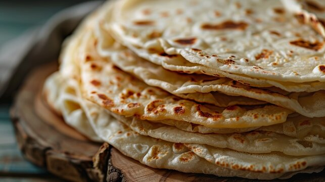

Description
Lefsa is a traditional Norwegien flatbread made with mashed potatoes, cream, flour, and sugar. Lefsa are usually
reserved for the holiday meals when they are served warm with butter and sprinkled with cinnamon-sugar for a
sweet-treat. They are also delicious rolled up with a juicy pickled herring.
Feel free to experiment with the toppings you use for your lefsa. Nothing is written in stone, if you think you
will enjoy it prepared a little differently then try it out.
Ingredients
- 18 baking potatoes, scrubbed
- 1⁄2 cup heavy whipping cream
- 1⁄2 cup butter
- 1 tablespoon salt
- 1 tablespoon white sugar
- 4 cups all-purpose flour
Directions
-
Peel potatoes and place them in a large pot with a large amount of water. Bring water to a boil,
and let the potatoes boil until soft. Drain and mash well.
-
In a large mixing bowl, combine 8 cups mashed potatoes, cream, butter, salt, and sugar. Cover potatoes
and refrigerate until cold or overnight.
-
Mix flour into the mashed potatoes and roll the mixture into balls about the size of tennis balls,
or smaller depending on preference. Keep balls of dough on plate in the refrigerator. It is important
that dough balls stay cold till they are rolled out.
-
Taking one ball out of the refrigerator at a time, roll dough balls out on a floured board. To keep the
dough from sticking while rolling it out, it helps to have a rolling pin with cotton rolling pin covers.
-
Fry the lefsa in a grill or in an iron skillet at very high heat. If lefsa browns too much, turn the
heat down. After cooking each piece of lefsa place on a dishtowel. Fold towel over lefsa to keep warm.
Stack lefsa on top of each other and keep covered to keep from drying out.